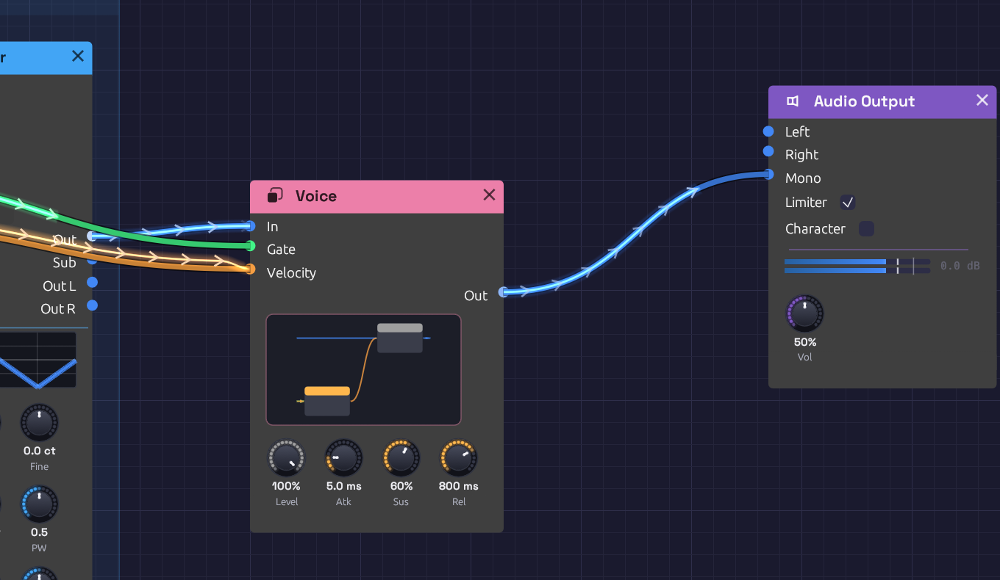
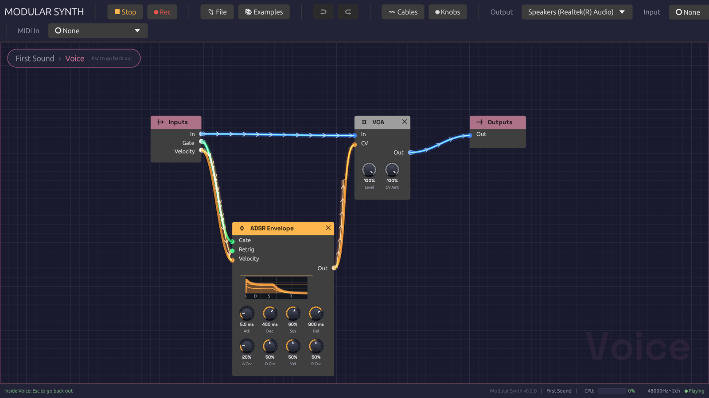

Groups
A good voice (an oscillator, a filter, a VCA and an envelope) is the same few modules in patch after patch, and three voices side by side turn into a wall of cables. A group collapses modules into one node of your own. It has jacks where cables crossed into and out of the selection, and the knobs you choose to keep on its face. Open it to work on what's inside. Save it to My Modules, and it's in the add menu of every patch.

Voice holds an envelope and a VCA. Its face shows them in miniature, with four of their knobs pinned.Making a group
Select some modules and press Ctrl + G, or right-click one of them and choose Group. They collapse into one rose-colored node where the top-left corner of the selection was. Type a name and press Enter.
Every cable that crossed the edge of the selection becomes a jack:
- An input jack for each output outside the group that fed something inside it. If one output fed several modules inside, as a keyboard's Gate might feed two envelopes, that's one jack.
- An output jack for each output inside the group that fed something outside it.
Jacks are named after the port inside, numbered if two names would be the same (In, In 2). They're colored by the signal they carry, like every jack, and ordered top to bottom by where their modules sit. Grouping doesn't change the sound: every module hears exactly what it heard before.
To take a group apart, select it and press Ctrl + Alt + G, or right-click it and choose Ungroup. Its modules come back out where the group was, laid out as they were, and every cable through its jacks becomes a plain cable again.
Inside a group
Double-click a group, select it and press Tab, or click the miniature on its face, to go inside. A trail at the top of the canvas shows where you are, such as First Sound › Voice. Click any name in the trail to go back out to it, or press Escape to go up one level.

Inside Voice. Inputs carries what's plugged into the group's jacks outside; Outputs sends its signals back out.Inside, two nodes stand for the group's jacks:
- Inputs has an output for each input jack. Whatever is plugged into that jack outside comes out here.
- Outputs has an input for each output jack. Whatever you plug in here comes out of that jack outside.
Everything else works as it does at the top of the patch. Modules you add, paste or drop from the palette land inside the group, and you can group modules inside a group too. The cables from Inputs show the signal arriving from outside. Frames and notes belong to the top level of the patch, so they're hidden while you're inside a group.
The face
The group's face shows a miniature of what's inside: each module as a small card in its header color, wired as it is. Hover it to see Open ▸, and click to go inside.
Below the miniature are any knobs you've pinned to the group. Inside the group, right-click a knob and choose Show on group. The knob appears on the group's face, in its module's color. It's the module's own knob, not a copy:
- Turning either one turns both.
- A MIDI Learn mapping works from either place.
- If a cable inside the group moves the knob, the face shows it moving.
Right-click a knob on the face and choose Hide from group to take it off. If the group is inside another group, Show on outer group too puts the knob on that group's face as well.
My Modules
Right-click a group and choose Save to My Modules. The group is saved as a file named after it, in Documents/Modular/My Modules.
Saved groups come first in the quick-add palette (Space), under My Modules, and in the add menu's My Modules submenu. Each one is described by its jacks and size, such as In, Gate, Velocity → Out · 2 modules. Choosing one adds a copy of the whole group at the cursor, with its modules, cables, jacks and pinned knobs.
Saving a group under a name that's already there updates it. The folder holds ordinary patch files, so you can copy them to another computer or share them. To find the folder, choose Open folder at the bottom of the add menu's My Modules submenu.
Editing and undo
Copy, paste, duplicate and delete treat a group as a whole: deleting one deletes everything inside it. Undo covers grouping, ungrouping, renaming, pinning and every edit you make inside a group. Undoing an edit that was made inside a group shows you that group as it happens.
How the sound works
The audio engine never sees a group. It only hears the modules and the cables between them, followed through any number of jacks. Groups use no CPU, and grouping or ungrouping never interrupts the sound. A grouped patch plays sample for sample what the ungrouped patch plays, and the test suite checks this for every example.
Groups are saved in the patch file, each holding its own modules, cables and groups. A patch with groups needs this version of Modular Synth or later to open. A patch without groups is saved just as before, so older versions still open it.
Limits
A group's jacks are set when you make it. To add or remove a jack, ungroup the group, change the cables, and group it again. The new group is called Group until you rename it; its pinned knobs are kept.